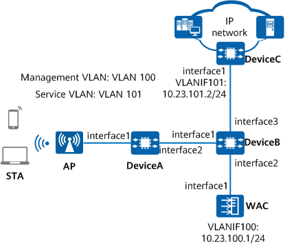

Example for Configuring WLAN Band Steering (5G-Prior Access)
Networking Requirements
Users access the network through a WLAN. To relieve the pressure on the 2.4 GHz frequency band, STAs need to connect to the 5 GHz frequency band.
APs support both 2.4 GHz and 5 GHz frequency bands.

In this example, interface1, interface2, and interface3 represent 10GE0/0/1, 10GE0/0/2, and 10GE0/0/3, respectively.
In this example, DeviceA, DeviceB, and DeviceC are common campus switches.

Item |
Data |
|---|---|
VAP profile |
|
RRM profile |
|
2.4 GHz radio profile |
|
For basic configurations for wireless network access, see Example for Configuring Layer 2 Direct Forwarding in In-Path Networking and Example for Configuring Layer 3 Direct Forwarding in In-Path Networking.
Precautions
- Use APs that support both 2.4 GHz and 5 GHz frequency bands, and configure the same SSID and security policy on the 2.4 GHz and 5 GHz radios.
- To allow STAs to preferentially associate with the 5 GHz radio and achieve better access effect, configure larger power for the 5 GHz radio than the 2.4 GHz radio.
- No ACK mechanism is available for multicast packet transmission over unstable wireless links of air interfaces. For this reason, multicast packets are usually sent at low rates to ensure stable transmission. However, if a large number of multicast packets are sent from the network side, air interfaces may be congested. Therefore, you are advised to configure multicast packet suppression to reduce the impact of numerous low-rate multicast packets on the wireless network. Exercise caution when configuring the rate limit if there are multicast services on the network, as this may affect the multicast services.
Configure multicast packet suppression on interfaces directly connecting the device to APs.
For details on how to configure traffic suppression, see How Do I Configure Multicast Packet Suppression to Reduce Impact of a Large Number of Low-Rate Multicast Packets on the Wireless Network?
- The port isolation configuration is recommended on the ports of the device directly connected to APs. If port isolation is not configured and direct forwarding is used, a large number of unnecessary broadcast packets may be generated in the VLAN, blocking the network and degrading user experience.
- The CAPWAP source interface or source address can be successfully configured only when all of the following security-related configurations exist: PSK for DTLS encryption, user name and password for logging in to an AP, and password for logging in to the global offline management VAP. If any of these configurations does not exist, the system prompts you to supplement related configurations first.
- If DTLS encryption for CAPWAP control tunnels is enabled, APs fail to go online after being imported. In this case, run the capwap dtls no-auth enable command to enable the function of establishing CAPWAP DTLS sessions in none authentication mode so that the APs can obtain security credentials. After the APs go online, run the undo capwap dtls no-auth enable command to disable this function promptly to prevent unauthorized APs from going online.
Configuration Roadmap
Configure the band steering function and proper band steering parameters so that STAs can preferentially access the 5 GHz frequency band.
Procedure
- Create an AP group and bind a VAP profile to the AP group.# Create an AP group to which APs requiring the same configuration are to be added.
<HUAWEI> system-view [HUAWEI] sysname WAC [WAC] wlan [WAC-wlan] ap-group name ap-group1 [WAC-wlan-ap-group-ap-group1] quit
# Create the SSID profile wlan-net and set the SSID name to wlan-net.[WAC-wlan] ssid-profile name wlan-net [WAC-wlan-ssid-prof-wlan-net] ssid wlan-net [WAC-wlan-ssid-prof-wlan-net] quit
# Create the VAP profile wlan-net and bind the SSID profile to the VAP profile.[WAC-wlan] vap-profile name wlan-net [WAC-wlan-vap-prof-wlan-net] ssid-profile wlan-net [WAC-wlan-vap-prof-wlan-net] quit
# Bind the VAP profile wlan-net to radios 0 and 1 of APs in the AP group.[WAC-wlan] ap-group name ap-group1 [WAC-wlan-ap-group-ap-group1] vap-profile wlan-net wlan 1 radio 0 [WAC-wlan-ap-group-ap-group1] vap-profile wlan-net wlan 1 radio 1 [WAC-wlan-ap-group-ap-group1] quit
- Configure the band steering function.# Enable the band steering function in the VAP profile wlan-net. By default, the band steering function is enabled.
When band steering is enabled on any radio of an AP, the function takes effect on the SSID of the AP. If different VAP profiles are applied to two radios of the AP, you only need to enable the band steering function in the VAP profile of one radio.
[WAC-wlan] vap-profile name wlan-net [WAC-wlan-vap-prof-wlan-net] undo band-steer disable [WAC-wlan-vap-prof-wlan-net] quit
# Create the RRM profile wlan-rrm and configure load balancing between radios in the profile to prevent a heavy load on a single radio. The start threshold for load balancing between radios is 15, and the load difference threshold is 25%.
[WAC-wlan] rrm-profile name wlan-rrm [WAC-wlan-rrm-prof-wlan-rrm] band-steer balance start-threshold 15 [WAC-wlan-rrm-prof-wlan-rrm] band-steer balance gap-threshold 25 [WAC-wlan-rrm-prof-wlan-rrm] quit
# Create the 2.4 GHz radio profile wlan-radio2g and bind the RRM profile wlan-rrm to the 2.4 GHz radio profile. If different RRM profiles are bound to the 2.4 GHz and 5 GHz radio profiles and configured with different band steering parameters, parameter settings in the 2.4 GHz radio profile preferentially take effect.
[WAC-wlan] radio-2g-profile name wlan-radio2g [WAC-wlan-radio-2g-prof-wlan-radio2g] rrm-profile wlan-rrm Warning: This action may cause service interruption. Continue? [Y/N]:y [WAC-wlan-radio-2g-prof-wlan-radio2g] quit
# Bind the 2.4 GHz radio profile wlan-radio2g to the AP group ap-group1.
[WAC-wlan] ap-group name ap-group1 [WAC-wlan-ap-group-ap-group1] radio-2g-profile wlan-radio2g radio 0 Warning: This action may cause service interruption. Continue? [Y/N]:y [WAC-wlan-ap-group-ap-group1] quit
Verifying the Configuration
# Run the display vap-profile name wlan-net command on the WAC. The command output shows that the band steering function is enabled in the VAP profile.
[WAC-wlan] display vap-profile name wlan-net -------------------------------------------------------------------------------- ... Band steer : enable ... --------------------------------------------------------------------------------
# Run the display rrm-profile name wlan-rrm command on the WAC to check the band steering configuration.
[WAC-wlan] display rrm-profile name wlan-rrm ------------------------------------------------------------ ... Band balance start threshold : 15 Band balance gap threshold(%) : 25 ... ------------------------------------------------------------
# Most STAs can access the 5 GHz frequency band, with good user experience.
Configuration Scripts
WAC
# sysname WAC # wlan ssid-profile name wlan-net ssid wlan-net vap-profile name wlan-net ssid-profile wlan-net rrm-profile name wlan-rrm band-steer balance gap-threshold 25 band-steer balance start-threshold 15 radio-2g-profile name wlan-radio2g rrm-profile wlan-rrm radio-5g-profile name wlan-radio5g rrm-profile wlan-rrm ap-group name ap-group1 radio 0 radio-2g-profile wlan-radio2g vap-profile wlan-net wlan 1 radio 1 radio-5g-profile wlan-radio5g vap-profile wlan-net wlan 1 # return